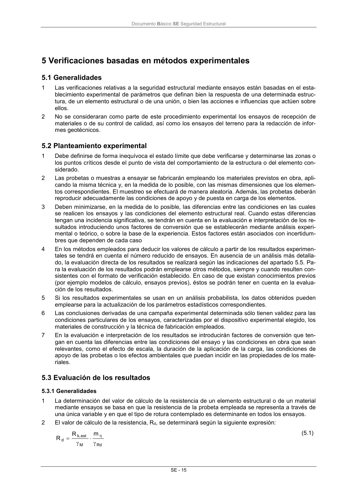

DB-SE · 5.2 Planteamiento experimental · versión 2019-12-20 · capa oficial
Formatos: JSON compacto · Markdown · PDF fuente
Ámbito del documento · texto del ámbito · documento y tablas
ID técnico a0057 · PDF pág. 21 · jerarquía no validada por persona · contrastado con el literal de la página 21 (candidato tipográfico); no validado por persona · padre: raíz
5.2 Planteamiento experimental 1 Debe definirse de forma inequívoca el estado límite que debe verificarse y determinarse las zonas o los puntos críticos desde el punto de vista del comportamiento de la estructura o del elemento con- siderado. 2 Las probetas o muestras a ensayar se fabricarán empleando los materiales previstos en obra, apli- cando la misma técnica y, en la medida de lo posible, con las mismas dimensiones que los elemen- tos correspondientes. El muestreo se efectuará de manera aleatoria. Además, las probetas deberán reproducir adecuadamente las condiciones de apoyo y de puesta en carga de los elementos. 3 Deben minimizarse, en la medida de lo posible, las diferencias entre las condiciones en las cuales se realicen los ensayos y las condiciones del elemento estructural real. Cuando estas diferencias tengan una incidencia significativa, se tendrán en cuenta en la evaluación e interpretación de los re- sultados introduciendo unos factores de conversión que se establecerán mediante análisis experi- mental o teórico, o sobre la base de la experiencia. Estos factores están asociados con incertidum- bres que dependen de cada caso 4 En los métodos empleados para deducir los valores de cálculo a partir de los resultados experimen- tales se tendrá en cuenta el número reducido de ensayos. En ausencia de un análisis más detalla- do, la evaluación directa de los resultados se realizará según las indicaciones del apartado 5.5. Pa- ra la evaluación de los resultados podrán emplearse otros métodos, siempre y cuando resulten con- sistentes con el formato de verificación establecido. En caso de que existan conocimientos previos (por ejemplo modelos de cálculo, ensayos previos), éstos se podrán tener en cuenta en la evalua- ción de los resultados. 5 Si los resultados experimentales se usan en un análisis probabilista, los datos obtenidos pueden emplearse para la actualización de los parámetros estadísticos correspondientes. 6 Las conclusiones derivadas de una campaña experimental determinada sólo tienen validez para las condiciones particulares de los ensayos, caracterizadas por el dispositivo experimental elegido, los materiales de construcción y la técnica de fabricación empleados. 7 En la evaluación e interpretación de los resultados se introducirán factores de conversión que ten- gan en cuenta las diferencias entre las condiciones del ensayo y las condiciones en obra que sean relevantes, como el efecto de escala, la duración de la aplicación de la carga, las condiciones de apoyo de las probetas o los efectos ambientales que puedan incidir en las propiedades de los mate- riales.

PDF fuente redistribuible: copia fiel enlazada en esta página (SHA256 verificado).